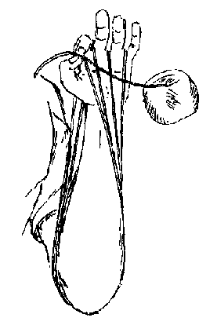
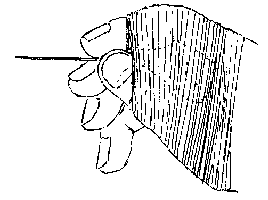
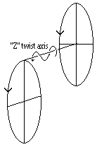
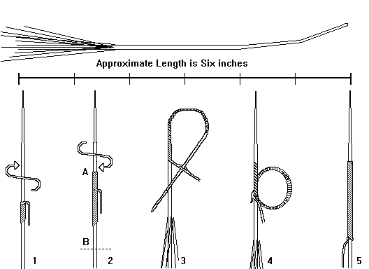
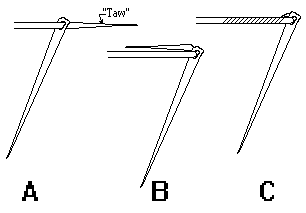
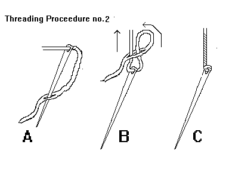
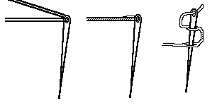
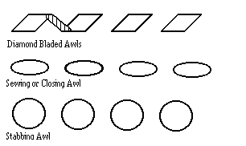

"Thread" would seem to be a fairly simple matter in the manufacture of shoes, especially during the Medieval period, but this turns out not to be the case. From Roman times about the 10th century, the "thread" shoes were made fromn was either flax (or linen) for closing, or assembling, the uppers; and leather strips (such as "thong", "wang"/whang", sinew, gut and so forth) for making, or attaching the uppers to the soles. During the early medieval period (the Dark Ages) some of the people of Britain seem to have used the leather strips for assembling uppers as well. Around the 10th century, a transition to linen thread began to take hold regarding making the shoes.. It should be noted that some woolen thread was used about the 11th century. [Hald; MacGregor, p.138 and 140; Pritchard, p.219; O. Goubitz, private communication to D.A. Saguto (Jul 1999); I. Carlisle, private communication to M Carlson (1998); email to Medieval-Leather (1 Jul 1999); C van Driel, private communication to M. Carlson (19 Jul 99)]. After that waxed flax or linen thread gradually became more common, and after the 14th century was eventually exclusively used, as far as we can tell. Currently, of course, thread comes in all manner of different materials.
As with most aspects of shoemaking, there is a great deal of disagreement and confusion about thread terminology, and rather than make the discussion at hand even more confusing than it is already, the following terms will be used: Thread, or the "thread" as it comes away from the spool or skein. Thread comes in plies, cords, or strands, of three, four, five, six, seven, or eight individual Cords. These cords may then also be made of thinner filaments (a "ply" for example is made of 2 or more strands). Threads are sometimes numbered to indicate their size or gauge, or referred to by their "weight" in Ounces. Most of the leather working thread, waxed or unwaxed, comes in five or seven ply, while sewing thread is generally either 3 or 6 cords.


but it's interesting, and if done properly, will be more regular than method 1, above] : You should be holding several threads between your thumb and index finger, with a lot more threads falling down behind them. Taking the extra thread, start wrapping it around the thumb and forefinger (it doesn't matter whether you wind the thread counter clockwise (although this will, I believe, produce a Z twist), or clockwise (producing, I believe, an S twist)
as long as you are consistant. This thread should be loosely wrapped, and should not be overlapped by any thread that comes after it. When you are finished, take the thread from between the index finger and thumb and pull gently. As you pull the thread straight away from your hand, along it's axis, the thread will assume a slight twist to it. This is a good thing. Rub the thread over the wax as you do this, a few inches at a time. Wrap the thread around something (like your hand) perpendicular to the axis of the thread: Then, without untwisting the thread, repeat the process, as often as you need to. This will give you an even twist through out the entire length of the thread.This is where we start treading into a difficult area that has caused me no end of trouble in dealing with the more religious shoe traditionalists. So let me start by saying that shoe tradition states that hand made shoes are always made, and generally closed with bristled thread. Since tradition is a very poor basis for making assertions, particularly when even today not everyone who makes hand made shoes uses bristles, I have been exploring the history of using bristles. The details of this exploration can be found here. The high point is that, at this time, bristles can be documented at least as early about 1220 and were commonly enough to have been referred to in France and Germany.
However, the difficult part of this is that prior to about 1000, when thonging was used to make the shoe, to attach the uppers to the soles, bristles are unlikely to have been used for that purpose. They may not have been used to close the uppers in this way, since I am not at all certain that bristles can be attached to thonging. Thonging suggests to me that some form of needle might have been used at this point.
Faceted needles, such as those known as "glovers needles" have been found at least in London, and are shown in Egan's Medieval Household. Shoemaker's needles are referred to later on in Juliana Berners' (b. 1388) alleged work, "Treatise on angling" in the Boke of Saint Albans, where they are suggested for making fishhooks. Needles are mentioned in both Thomas Dekker's "The Shoemaker's Holiday" (1598) or Thomas Deloney's The Gentle Craft (1599) and later. It can be assumed that these are related to the much later "carrelet", used for whipstitching in linings in uppers.
A Carrelet. Unlike a glover's needle, the blade edges are sharp.
Boar's Bristle is used because it is flexible enough to make it ideal for some of the tight curves needed for some of the stitches referred to. Any form of flexible material is, theoretically, usable (as long as it is thin, stiffish, and durable and cheaper than needles.
To begin with, you must use some form of sticky Shoemaker's Wax/Hand Wax (which is often black, brown, green or gold, depending on the mixture), since bee's wax will not hold the thread to the bristle. The wax is warmed in the hand and fingers and then rubbed on the taw, or the long tapered end of the thread, and on the Bristle.

There are other techniques as well, including one described by Frommer that is more closely akin to braiding the waxed thread and bristle than what has been described above.
Other items used as bristles are: Floss threaders; nine inch length of cheap monofilament fishing line, even allegedly human hair for very fine stitching (as fine as 64 stitches to the inch, if you believe that).
Some people have suggested that all sewing and stitching can be done needles, and, in all honesty, I have worked with these myself. What is important to remember is that when working with all but the thinnest leathers you should be piercing holes for the stitches with an awl rather than with the needle. This is not strictly true for glover's needles, which have their awl-point as part of the needle, and these may be used in the place of a "carrelet" in sewing the uppers. As a note for the pedantic, a carrelet has a square sectioned needle, while a glover's needle has a triangular section.
Needles are often gauged with zeroes through higher digits to indicate size. You should find a package of large and package of medium size needles sufficient to last you for quite some time. I have not found the leatherworking needles found in fabric and sewing stores to be durable to work with, but there opinions vary.
With some careful bending, harness needles can be bent sufficiently for use with curved awls. Both Stohlman and Saguto say that harnessmakers have only begun to use harness needles fairly recently (since the 19th century), and before that they used bristles as well.
There are several methods for threading the needle that I have seen, the most simple being shown here:

The thread is wrapped back around the thread to hold it firmly in place. The second method, involves running the needle through the "tail" of the thread that has passed through the needle, after tightly twisting the end of the tail. The thread is pulled back while the needle is held firmly. If this is done properly, the needle will be "locked" into place.

The third method, starts by taking the thread and twisting it about an inch and a half from the end. Poke the needle through the thread twice, and then thread the needle. Pull the thread over itself and the eye of the needle. This method will also lock the needle in place. There is a fourth method that begins by threading the needle, and pulling the thread through so that it can be pulled to two even lengths with the needle in the middle. Then unravel the cords and rewind them into a single cord, with the needle sealed in place at the end.

A common misconception among leatherworkers is that the waxed thread sold in leather stores needs a rotary hole puncher and a big fat lacing needle to get it through a gaping hole made by the punch. Moreover, that punched holes were generally slammed home with a hammer and chisel-like tool. Neither of these is true for shoemaking. Stitching holes are made by an awl, which is run through the leather, by hand. Then the thread is pulled through by a bristle or needle (There is also a tool known as a "stitching awl" (or a "lock stitch awl", that mimics a sewing machine's lock stitch, and while some people are very fond of them I have never used one and so I am not able to describe either the tool's virtues or failings. They are not a medieval tool, and I have found no shoemaking tradition that uses them).
Ideally, stitching should be done with both hands, and an awl in the dominant hand, never letting any of them down between stitches (personally, I can't manage this, but I know it can be done). As long as I'm at it, just a note on posture. The Traditional shoemaking posture is for the shoemaker sitting on a low work bench, with his project on one knee, held in place by a stirrup, a closing or sewing block (if the item is not lasted), with the heel resting on a heel, or footing, block. The sewing takes place between the split portion of the stirrup, which is holding the work in place by pressure on the heel block. In the few drawings we have of medieval shoemakers (see, for example, the pictures in the Shoemakers section) this does not appear to be the posture used, rather they sat on a normal height chair and held their work up in front of them. Of the two, the former is purported to be the ergonomically more sound.
Some people suggest that you try not to stitch with thread lengths longer than two feet, while others use threads of an arm's span. A standard among shoemakers, according to D.A. Saguoto is 1 1/2 fathoms (again, 7 1/2 feet to 9 feet, depending on when your definition of "fathom" comes from). There is a major disagreement between people (in this case, specifically between Saguto and myself) regarding the length of thread you should use. If I may, the basic positions are:
You don't need to shove your awl in too deeply, making a huge hole. Get the feel of pushing it just deep enough to make a hole large enough let the thread pass snugly through. (If you are using a needle, most professionals feel that you should never have to use pincers or pliers, but that if the hole is too small, you should back the needle out and use the awl to make the hole a little larger. Bristles, I'm told, don't jam. Pincers, on the other hand, can break your needles).
When piercing the hole, the line of the stitching should be straight and even, regardless of the sort of awl you are using. The idea is to get the thread to pull across the width of the awl hole because it gets to grab more leather.

The diamond bladed awl appears to have been used at least in York in shoemaking.
Some 19th c shoemakers were reputed to make extremely fine stitches, specifically on the uppers. The legendary extreme to prove the superiority of hand stitching to machines is "64 to the Inch". As a comparison, the modern shoes I am currently wearing have 10 stitches to the inch on the uppers, and 5 to the inch on the welt seam. Many of the archaeological examples use stitches, especially to connect the soles to the uppers, about 8mm or half a "finger" in measurement. Personally, for assembly work on the uppers (including setting reinforcement cords and putting the pieces together) I use a single or double ply thread and about 10-12 stitches to the inch. The modern sewing machine can manage, at best about 30 stitches to the inch. More than that on a machine will tear the leather. Work that is as fine as the 64 to the inch must have been done with an extremely fine awl and a bristle of human hair.
Return to Contents
Footwear of the Middle Ages - Thread, Copyright � 1996, 1999, 2001 I. Marc
Carlson.
This page is given for the free exchange of information, provided the author's name is
included in all future revisions, and no money change hands, other than as expressed in
the Copyright Page.